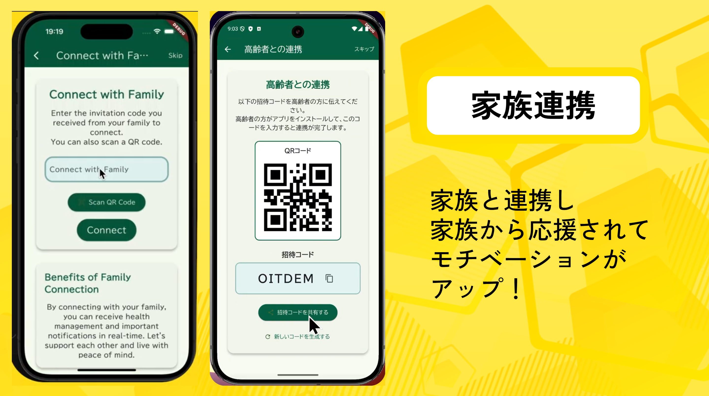
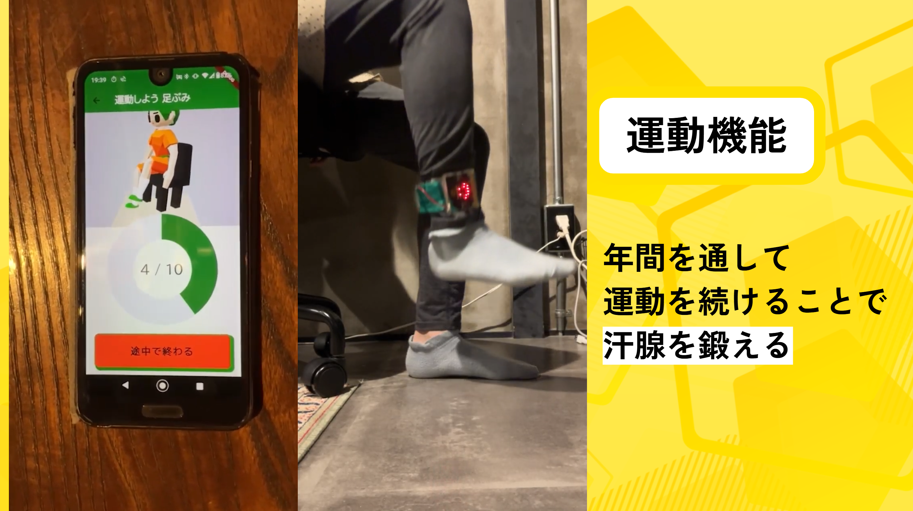
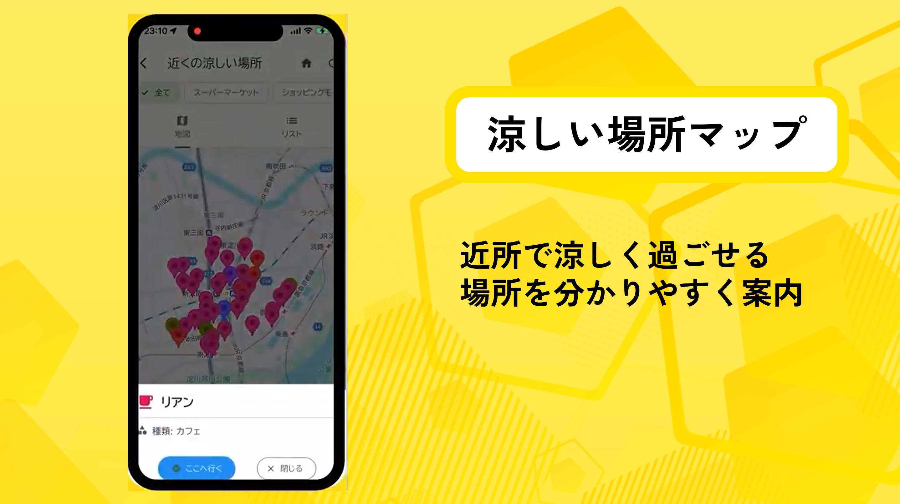
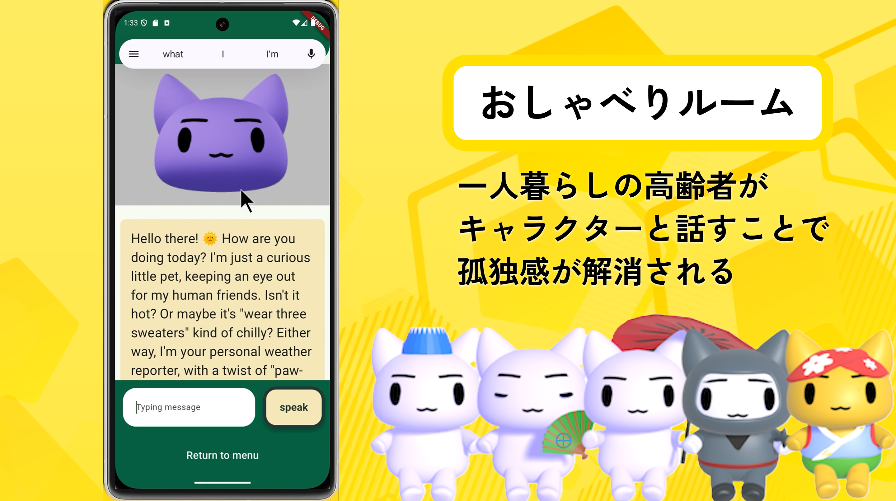
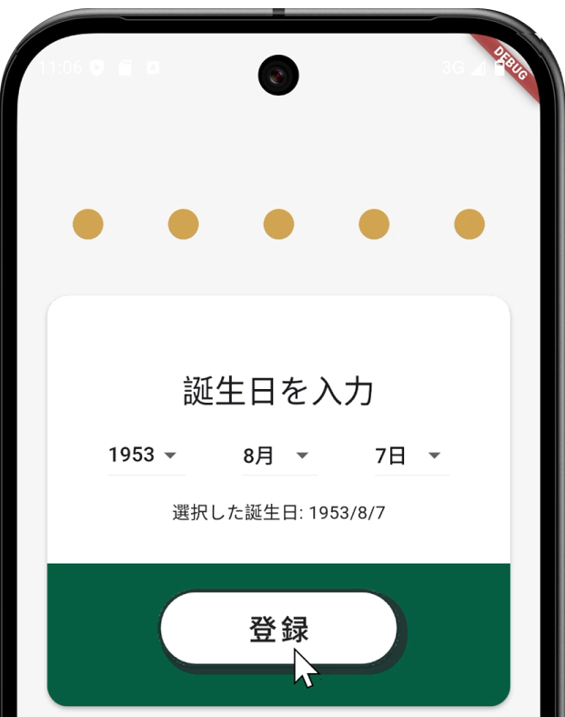
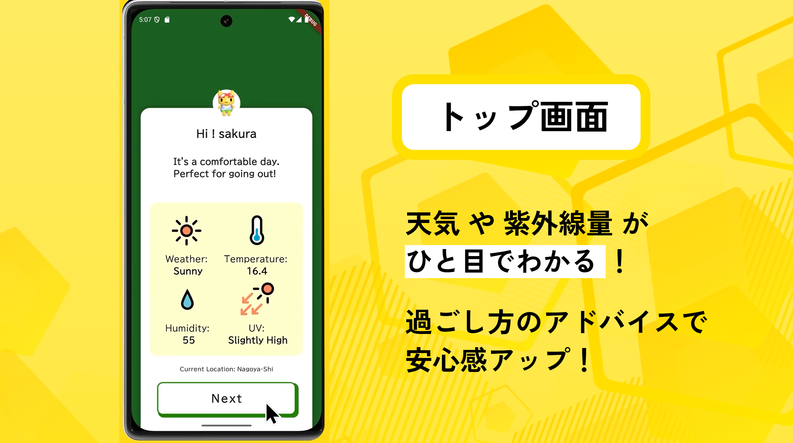
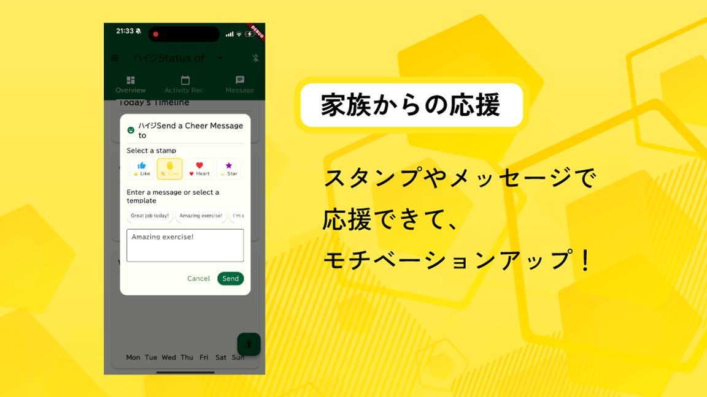

高齢者の熱中症予防を支援するスマートアプリ。
家族・地域とつながり、健康で安心な毎日を。
熱中症予防をサポートする多彩な機能をご紹介します。
見守り・応援で安心とつながりを。ユーザの家族の方がユーザのマイページに表示されるQRコードを読み取ると、家族用のインストール用URLをメールに送信できます。家族連携すると、ユーザの活動状況を閲覧したり応援メッセージを送ることができます。
日々の運動を提案し、健康を維持。年間を通して運動し暑さに慣れることで暑熱順化を促進します。ウェアラブルデバイスを用いたインタラクティブな運動機能や、ストップウォッチ機能を用いたインターバル歩行など充実させました。2D/3Dのアニメが案内するので安心です。
近隣の避暑スポットを案内します。出かける前には、お出かけアイテムや施錠のチェック画面を使って安心して外出できるよう工夫しています。公的機関のほかにスーパーやコンビニに立ち寄ることもおすすめします。
AIキャラクターと会話して気分転換。熱中症や対策方法に詳しい設定のAIと会話ができるので、日常的に熱中症対策への意識を高めることができます。機能が多いことで、いつでも開いておきたくなる百貨店のようなアプリを目指しました。
このアプリは高齢者の方に使いやすくなっています。
アプリをダウンロードし、基本情報を入力。大きな字・ボタンと分かりやすい進捗ナビゲーションで登録できます。
アプリを立ち上げると、一番初めの画面で天気や体調に合わせたアドバイスを毎日確認できる。天気の情報はWeatherInfomationから取得し、分かりやすいアイコンで表示しています。
家族と活動を共有して安心。家族側のアプリ画面はフィードバックしやすいUIになっているので、ちょっと手がすいた時に応援することができます。
アプリを毎日使ってマスコットを育てよう！可愛い猫や犬のキャラクターが様々なコスチュームに変身するので運動や日々の活動へのやる気を高めることができます。（猫、犬は初めのユーザ設定で登録したものになります。）
実際に利用している方々の声をご紹介します。
よくあるご質問にお答えします。
「Beat the Heat」は、高齢者を中心に誰もが安心して夏を過ごせるよう支援するプロジェクトです。 女子・ノンバイナルの中高生向け、ITを駆使したプロジェクト開発コンテスト「 Technovation Girls 」の2025年度に応募した作品で、 熱中症予防をテーマに、テクノロジーとデザインを組み合わせ、家族・地域とつながりながら健康な暮らしを実現します。
※このプロジェクトはコンテスト向けに作成され、現時点では一般用に提供しておりません。
4名の中高生チーム「 Sakura🌸Tech 」がプロジェクトおよびアプリを開発しました。 ※ 2025年度時点の学年
開発環境: Flutter
データベース: Firebase
3Dアニメ: Blender
2Dアニメ: Rive
AI: Microsoft Azure Open AI